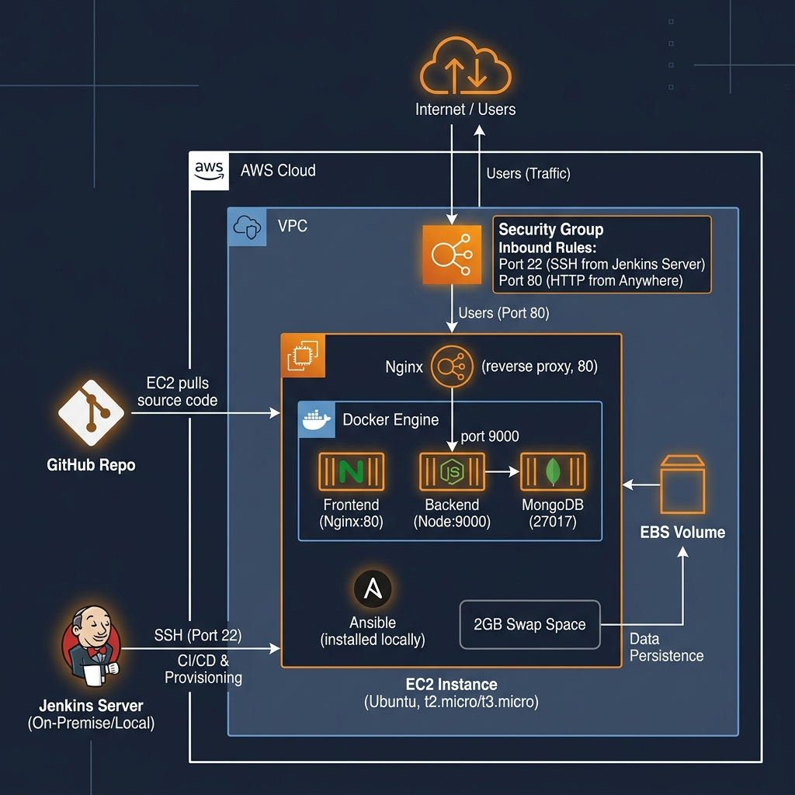

CineBook (BookMyScreen) is a high-performance full-stack web application designed for theater ticket reservations. Built on the MERN stack (React.js, Node.js, Express, MongoDB), the application features concurrent seat locking, user authentication, and responsive seat layouts.
To operationalize the application, DevOps practices were introduced to automate the manual software release cycle. An automated pipeline handles builds, environment variable configuration, dockerization, Ansible deployments, and server health monitoring.
Manual deployment of multi-tier web applications leads to:
- Environment Drift: Mismatched Node.js/package versions between local development and AWS EC2 servers.
- Security Exposures: Manually writing .env files or exposing production database credentials inside repositories.
- Release Downtime: Manual server updates cause application service disruptions.
- Monitoring Deficits: No instant alerts or metrics for service failures.
- Automate Pipeline: Establish a Jenkins CI/CD pipeline triggered automatically via Git hooks upon code changes.
- Enforce Containerization: Package Frontend (React/Nginx), Backend (Node), and MongoDB into distinct Docker containers.
- Define Configuration-as-Code: Use Ansible to automate server provisioning, dependency installation, and swap file settings.
- Implement Zero-Downtime Deployment: Configure Nginx reverse proxy routes with automatic health verification loops.
- Establish Monitoring & Rollback: Deploy health check scripts to confirm backend responsiveness and support rapid rollbacks.
HARDWARE CONFIGURATION:
- AWS EC2 Server: c7i-flex.large Instance (2 vCPUs with 1 core each, 4GB RAM).
- Storage & Network: 20GB General Purpose SSD (gp3); 1Gbps Bandwidth.
- Virtual Swap File: 2GB Configured Swap for npm build compilation stability.
SOFTWARE DEPLOYMENT MATRIX:
- Operating System: Ubuntu Server 22.04 LTS (HVM).
- CI/CD & Provisioning: Jenkins LTS v2.440+, Ansible Core v2.12+.
- Container System: Docker Engine v24.0.7+, Docker Compose v2.22.0+.
- Server Runtimes: Node.js v20.x, Nginx stable-alpine, MongoDB v7.0.
- Auto-Checkout & Build: Detect GitHub commits via Jenkins polling (every 2 mins), checkout, and run test suites.
- Secrets Configuration: Inject environment variables (.env files) on target servers without storing them in Git.
- Container Orchestration: Docker Compose manages private networking between containers, avoiding host port clutter.
- Reverse Proxy Proxying: Nginx routes traffic securely on Port 80, routing `/api/v1` calls to the Node container.
- Deployment Health Verification: Script polls API endpoints (12 attempts) before declaring build success.

| ID | Deployment Stage | Verification Method | Result |
|---|---|---|---|
| TS-01 | SCM Checkout | Jenkins checkout Git revision matching main commit HEAD. | Success |
| TS-02 | Dependency Resolve | NPM install executes with exit code 0 on Frontend and Backend. | Success |
| TS-03 | Production Build | TypeScript builds backend, Vite bundle compiles frontend static assets. | Success |
| TS-04 | SSH Key Exchange | Jenkins establishes secure credentials connection to EC2 remote host. | Success |
| TS-05 | Ansible Playbook | Executes locally on host to pull updates and setup configuration. | Success |
| TS-06 | Containers Startup | Verify container states: Mongo, Backend, and Nginx are up. | Success |
| TS-07 | Health Check Loop | cURL verification to `/api/v1/movies` returns HTTP Code 200. | Success |
- Collaborative Integration: Webhook integration links branch commits to automated tests, eliminating broken code merges.
- Hermetic Environments: Docker containerization ensures identical package runtimes across dev, staging, and AWS production.
- Rapid Configuration: Ansible handles server configurations dynamically, letting engineers deploy setups in a single command.
- Zero Configuration Leaks: Ansible templates and Jenkins secrets manage security keys, ensuring private keys are never committed.
- GitOps CD with ArgoCD: Transition from push-based Jenkins scripts to pull-based declarative synchronization via Git.
- Canary & Blue-Green Releases: Integrate traffic splitting with Istio service mesh to safely test new releases with a subset of users.
- Automated Chaos Engineering: Inject failures (e.g., using Chaos Mesh) in staging to test auto-healing and recovery metrics.
- Zero-Trust Secrets Orchestration: Implement dynamic database credential rotation via HashiCorp Vault.
The implemented DevOps workflow transitions the **CineBook** application from a fragile manual release process to a modern, robust, and automated continuous deployment pipeline.
By leveraging **Jenkins** for build scheduling, **Ansible** for environment configuration, and **Docker Compose** for microservices orchestration, the system secures reliable releases on **AWS EC2**. The addition of continuous health checks guarantees service integrity, enhancing project collaboration efficiency, security, and cloud scalability.